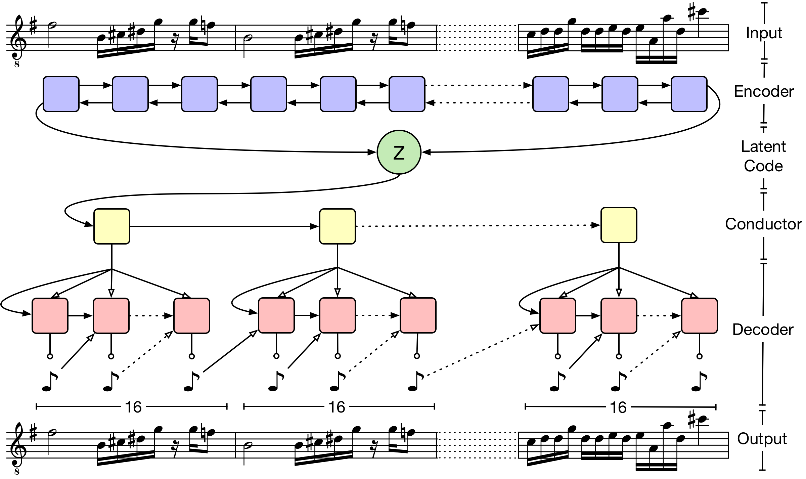
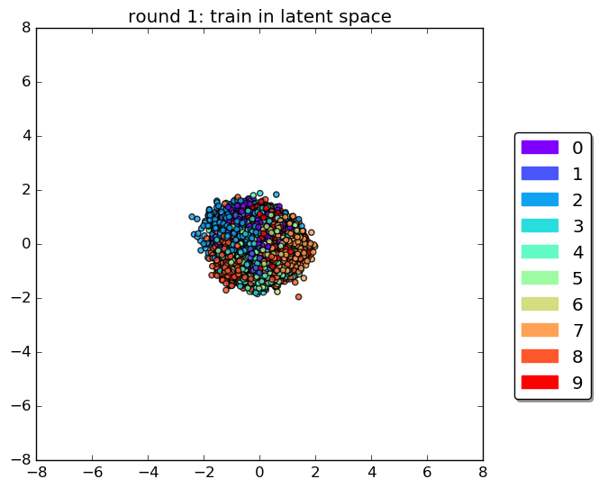

Music Generation Project
- Music Information Retrieval
- AI Music Generation
음원 정보 복원(Music information retrival) 은 음원으로부터 정보를 추출하는 다양한 학문에 걸친 분야로 알려져 있다. MIR은 현실 세계에 다양하게 적용되며, 음악학(musicology), 음향심리학(psychoacoustics), 심리학, 신호처리(signal proecssing), 정보학(informatics), 특히 기계학습 분야에서 분류(Classification) 및 생성(Generation) 등의 형태로 다양하게 적용됩니다. 그 중에서도 자동 음원 생성(automatic music generation) 의 분야는 많은 MIR 연구자들에게 도전적인 주제이며 현재까지 이러한 시도들은 제한된 성공으로 남아있다.

불과 얼마전만 하더라도 인공지능의 창조적 능력에 대한 의구심이 제기됐다. 인간과 기계를 구분하는 ‘감정’은 예술 분야에서 가장 중요한 요소이고 기계는 인간 고유의 영역인 감정을 이해하지 못한다는 의견이 많았다. 하지만 최근 음악 분야에서 글로벌 IT 기업을 필두로 딥러닝 기술을 활용해 음악 작곡에 도전하는 인공지능 프로젝트의 성과는 놀라움을 주고 있으며 “인공지능(AI)이 생산하는 음악의 진행 속도를 고려할 때, 10년 안에 수작업으로 작곡하는 것은 구식이 될 것으로 보인다.” 라는 전문가의 예측도 있다.
OpenAI의 MuseNet(2019), Jukebox(2020) 그리고 Google의 Magenta(2017) 프로젝트는 이러한 딥러닝 방식을 가장 잘 활용한 대표적인 음악 인공지능이다. MuseNet은 GPT-2, Sparse Transformer 모델을 사용하여 많은 양의 MIDI 데이터를 학습하였고 10개 악기를 사용해 새로운 음악을 만들어 낸다. 그리고 Jukebox는 VQ-VAE-2 모델을 기반으로 Waveform의 Long Range Structure와 High diversity를 이해하여 원본과 상당히 유사한 사운드를 생성할 수 있음을 보여주었다.


마지막으로 Google의 Magenta는 음악 시퀀스 데이터의 음악적 특성을 담아 요약된 잠재 벡터로 인코딩하고 그 후에 다시 음악 시퀀스로 디코딩하는 MusicVAE 모델을 사용하였다. 이러한 인공지능이 만들어낸 음악은 아직 인간이 만든 음악과는 구분이 되는 편이고 기존 음악보다 뛰어나다고 볼 수는 없다. 하지만 시간이 흐르고 점차 많은 음악 관련 데이터를 학습하고 컴퓨팅과 하드웨어의 발전이 동반되면 인공지능이 어떠한 음악을 만들어 낼 수 있을지 가늠하기 어렵다.

MusicVAE
Prior work
- Deep Learning based ASMR
- ASMR Generation Demo
딥러닝을 이용하여 기존 ASMR 음원들을 모으고 분류하며 사용자의 선호도를 바탕으로 새로운 ASMR 음원을 생성할 수 있는 플랫폼인 DeepASMR을 제안한다. DeepASMR은 ASMR 음원 분류 및 인식을 위해 기존의 음악 인식이나 소음 인식을 위한 DNN보다 개선된 DNN 모델들을 구축하여 분류의 정확도를 95% 이상까지 높였다.
 .
.
DNN을 기반으로 기존 ASMR 음원들을 변형하거나 합성하는 방식으로 새로운 ASMR 음원을 생산한다. 이를 위해 VAE(Variational Autoencoder) 및 GAN(Generative Adversarial Network) 방식을 이용하여 ASMR 음원 생성 DNN 모델을 구축하였다. 이를 통해 생성된 ASMR 음원들을 우리의 분류 DNN 모델에 입력하여 그 정확성을 검증한 결과, 70% 이상의 정확도를 보여 제안하는 DNN 모델이 양질의 ASMR 음원들을 생성하였음을 시사한다.

MIDI and Waveform
- Waveform Audio File Format
- Waveform은 ms(millisecond, 1000의 1초)를 2차원 이미지로 표현할 수 있지만 시간 축(Time)에 해당하는 부분이 길어지므로(Length) 용량이 커지는 단점이 있다.
- WAV는 비 압축파일로 다른 포맷과 비교해서 고용량 파일이지만 단순성과 품질면에서 유리하다
- 비 압축 파일이므로 많은 불필요한 공간을 차지하는 단점이 있다.
WAV
- Musical Instrument Digital Interface
- MIDI는 악기의 음표, 소리의 크기등을 저장한 파일이며 다양한 악기 정보가 담길 수 있다.
- MIDI는 note와 duration이 기록된 3개의 8 bytes packet으로 구성되어 있으며 waveform과 비교했을 때 용량이 compact 하다.
- 데이터가 wave에 비해 구하기 어려우며 음악적 도메인이 없다면 다루기 힘들다.
MIDI

Audio Processing
- Waveform
- Spectrogram
- Mel Filter
- Reconstruction

Waveform
소리는 진동으로 인한 공기의 압축으로 생성되며
압축이 얼마나 됐느냐에 따라 진동하며 공간이나 매질을 전파해 나가는 현상인 Wave(파동)으로 표현
Waveform 에서 얻을 수 있는 정보
위상 (Phase; Degress of displacement)
진폭 (Amplitude; Intensity)
주파수 (Frequency)
Fourier Transform
푸리에 변환은 임의의 입력 신호를 다양한 주파수를 갖는 주기 함수들의 합으로 분해하여 표현하는 것을 의미한다.
f 가 푸리에 급수로 분해되어 파란색으로 표시된다. 이 사인파들을 주파수에 따라 나열하면 영상의 후반부에 나타나는 것 처럼 디랙 델타 함수(Dirac delta function)의 꼴로 표시된다. 이 때 주파수 영역에서의 함수를 f̂ 로 표시한다.
Magnitude spectrogram of a piano recording
소리의 디지털 표현은 다양한 형태로 제공된다. 사운드는 일반적으로 시간이 지남에 따라 변화하는 파형의 모양을 인코딩하여 저장된다. 그러나 Waveform은 그 자체로 분석하기는 어렵기 때문에 Waveform의 중첩된 Window에 대한 푸리에 변환을 계산하고 결과를 행렬로 표현하여 스펙트로그램으로 시각화 할 수 있다. 이렇게 스펙트로그램을 사용할 경우 Waveform 에 비해 시간 경과에 따른 파형의 Local Frequency contents를 쉽게 확인 할 수 있다는 장점이 있다.
스펙트로그램은 복소수 값이며. 스펙트로그램은 시간 경과에 따라 각 시점에서 서로 다른 주파수 성분의 진폭과 위상을 모두 나타낸다. 위의 그림은 Magnitude 스펙트로그램이며 아래 그림은 phase 스펙트로그램을 시각화한 것이다. 아래의 Phase Spectrogram의 경우 Local Frequency Contents를 육안으로 확인하기 어려우며 값이 랜덤하게 분포돼있는 반면 Magnitude 스펙트로그램은 시간 경과에 따른 Local structure를 뚜렷하게 표현하고 있다.
the corresponding phase spectrogram
이처럼 오디오 신호에서 정보를 추출할 때 유익한 정보를 추출하기 위해 phase component를 버리는 경우가 많다. 사실 이것이 바로 magnitude spectrogram을 간단히 "spectrogram"으로 언급하는 이유이다. 그러나 소리를 생성할 때 phase 정보는 소리 인식에 의미 있는 영향을 미치기 때문에 매우 중요하다. 위상 정보의 자세한 활용은 아래 링크에서 확인할 수 있다.
More DetailMel Scale
Mel-filter의 기본 아이디어는 사람의 청력은 1000Hz 이상의 frequency에 대해서는 덜 민감하므로 1000Hz까지는 Linear하게 그 이상은 Log scale로 변환하는 것이다.
Hertz scale은 사람이 받아들이는 민감도나 구분점을 잘 반영하지 못한다. 예를 들어 5000Hz 와 8000Hz를 들어도 사람은 3000 정도의 주파수가 차이나는 것을 인지하지 못한다. 따라서 이를 사람이 쉽게 인식 할 수 있는 scale로 변환해준 것이 Mel scale이다. 아래 그림처럼 1000Hz까지는 Linear하게 변환하다가 그 이후로는 Mel scale triangular filter를 만들어 곱해준다.
보통 26개 혹은 40개 정도의 filter bank를 사용한다. 각 Filter Bank 영역대 마다 Energy값(spectrum power값 평균)을 모두 합하고 log를 취해준다. 이렇게 주파수 영역뿐만 아니라 amplitude 영역에서도 log scaling을 해주는 이유는 사람이 주파수 영역 뿐만 아니라 amplitude 영역에서도 log scale로 반응하기 때문이다. 이렇게 하면 결과적으로 filter bank 개수만큼의 Mel scale bin 별로 log power 값들이 구해진다.
다시 frequency 관점에서 Mel-scale은 낮은 주파수에서 더 잘 구별하고 더 높은 주파수에서 덜 구별함으로써 소리에 대한 인간의 비선형 귀 인식을 모방하는 것을 목표로 한다. 다음 방정식을 사용하여 헤르츠(f)와 멜(m) 사이를 변환할 수 있습니다. melspectrogram은 frequency가 mel scale로 변환되는 spectrogram이다.
Inverting the spectrogram
Inverting the mel spectrogram
ASMR Project
- Architecture
- ASMR feature extraction
ASMR (Fire) sound
Human voice sound
Generative Model
- Variational AutoEncoder (VAE)
- VAE는 Training data와 같은 분포를 가지는 sample 분포에서 sampling을 하여 새로운 것을 생성하는 모델이다.
- 주어진 Training data의 분포를 p_data(x)라 할 때 sample 모델 p_model(x) 역시 같은 분포를 가진다고 가정한다.
- p_model(x)를 통해 inference하면 새로운 x가 생성된다.
- Encoder 함수의 output은 latent variable의 분포의 𝜇 와 𝜎 를 내고, 이 output값을 표현하는 확률밀도함수를 생각해볼 수 있다.
- Sampling한 값들을 backpropagation 하기 위해 reparmeterization trick을 사용한다.
- Decoder는 Sampling된 z값을 입력으로 받아 Encoder의 Input의 shape으로 reconstruction 하는 layer이다.
- VAE Animation
- Vector-Quantized Variational Autoencoders (VQ-VAE)
- VAE와 Discrete Representation을 결합한 새로운 생성모델(VQ-VAE)을 제안한다
- Encoder의 output을 Discrete Representation Space로 Mapping하는 Vector Quantization Layer를 도입하였다.
- Vector Quantisation(VQ)를 사용하여 너무 큰 분산으로 생기는 어려움을 피하면서 학습하기 편하고 Posterior Collapse 문제를 회피할 수 있다.
- 연속표현을 사용하는 모델과 비등하면서도 이산표현의 유연함을 제공한다.
- VQ 방법을 사용하면 모델이 강력한 autoregressive decoder와 짝을 이룰 때 latent들이 무시되는 “Posterior Collapse” 문제를 피할 수 있다.
- 이어서 나올 Wavenet 모델이 decoder로 활용될 수 있다.
- Wavenet은 Audio waveform을 Generate 하는 Auto regressive Model이다.
- waveform을 결합확률분포로 표현하고, 이를 Convolution layer를 쌓아서 모델링한다.
- 1D convolution으로 Time-series data를 causal하게 Mapping하여 waveform을 생성하는 알고리즘
- waveform의 경우 이전 상태의 정보가 중요하므로 dilated convolution으로 Receptive Field를 넓히는 방법을 사용한다.
- 내부적으로 Residual block 및 skip connection을 사용한다
- TTS, 음악, voice conversion 등에 활용
Variational AutoEncoder

VAE Latent Space
VAE Result
Originals Rain ASMR
Generated Rain ASMR
VQ-VAE Structure
Vector Quantization
Wavenet
Wavenet
The model predicts the distribution of potential signal values for each timestep, given past signal values.
VQ-VQE With Wavenet

Reconstruction
이 샘플들은 VQ-VAE 모델로 입력되는 음원을 이산적 잠재 코드로 64배 압축한 결과물이다. VQ-VAE는 prior 없이도 파형 그 자체로부터 처음부터 끝까지 학습이 진행된다. 비록 reconstruction된 파형이 원본의 모양과 많이 다른 모습을 띠지만 그래도 꽤 유사하다.
Originals and reconstructions
Samples from Prior
이산 잠재공간은 매우 압축된 상징적 표현 속에 말의 내용과 같은 중요한 특징을 음원으로부터 캐치한다. 이러한 특성 덕분에, 이 잠재 공간의 시작 부분에 또 다른 Wavenet 모델을 학습시킬 수 있으며 Long term dependency를 효과적으로 이해할 수 있다. 만약 데이터가 충분하면 하나의 모델이 심지어 전처리되지 않은 음원으로부터 직접 언어 모델을 학습할 수 있게 된다.
Sample Audio
VQ-VAE Result
Originals Fire ASMR
Generated Fire ASMR
Melnet
Melnet
Autoregressive model은 간단한 분포를 모델링하여 복잡한 고차원 분포를 설명하는 방법이다. 모델이 한 번에 하나의 요소를 예측하도록 훈련되는 이 접근법은 Image, Text 및 Waveform을 포함한 다양한 데이터 양식에 성공적으로 적용되었다. 멜넷은 스펙트로그램의 모델링에 이와 같은 접근법을 적용한다. PixelCNN과 같은 Autoregressive 이미지 모델이 이미지의 공간 치수에 대한 분포를 픽셀 단위로 추정하는 것과 마찬가지로, MelNet은 스펙트로그램의 시간과 빈도 치수에 따른 분포 요소를 추정한다.
Melnet은 두 가지 다른 자기 회귀 순서를 실험하였다. 첫 번째는 각 스펙트로그램 프레임을 저주파에서 고주파까지 거쳐 다음 프레임으로 진행하는 Time major ordering 이다. 두 번째는 Multiscale ordering이다.
Time major ordering
Upsampling
Multiscale Modelling
자기 회귀 모델의 한 가지 단점은 Global Structure보다 Local Structure를 훨씬 잘 학습하는 경향이 있다는 것이다. standard row-major ordering 순서로 이미지를 모델링할 때, 이는 현실적인 질감을 가지지만 객체 레벨에서 일관성 있는 높은 수준의 구조와 더 높은 수준의 장면 구성이 부족한 샘플을 생성한다. 이 문제는 고차원 분포를 모델링할 때 특히 두드러진다. 우리는 수십만 차원으로 스펙트로그램을 모델링하는 것을 목표로 하고 있기 때문에, 이러한 효과에 대응하기 위한 대책을 도입하는 것이 필수적이다. 이를 위해 대략적인 순서에 따라 스펙트로그램을 생성하는 멀티스케일 모델을 사용한다. 높은 수준의 구조를 캡처하는 저해상도 하위 샘플링된 스펙트로그램이 처음에 생성된 다음 고해상도 세부 정보를 추가하는 반복적인 업샘플링 절차가 이어진다. 이러한 방식으로 스펙트로그램을 생성함으로써 로컬 구조와 글로벌 구조를 학습하는 작업을 분리할 수 있다.